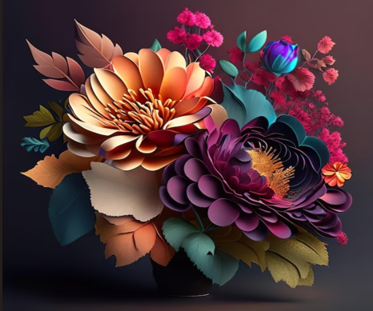
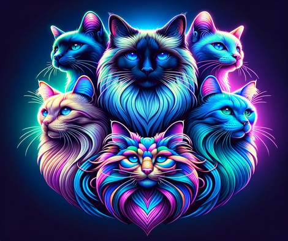

Projects

Flower Animation Art
A brief description of the project, its purpose, and its features.
Technologies Used: HTML, CSS, JavaScript
Challenges: Describe key challenges faced during development.
Outcomes: Describe the results and what you achieved.
View Details

Cat Breed Library
A brief description of the project, its purpose, and its features.
Technologies Used: Python, Flask, MySQL
Challenges: Describe key challenges faced during development.
Outcomes: Describe the results and what you achieved.
View Details